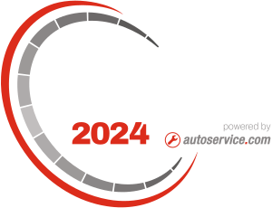
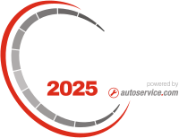
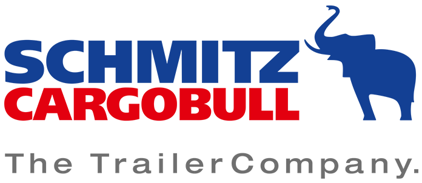
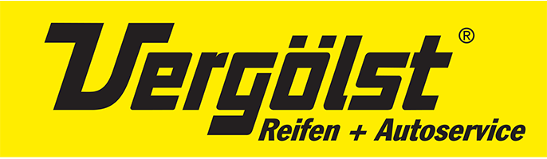
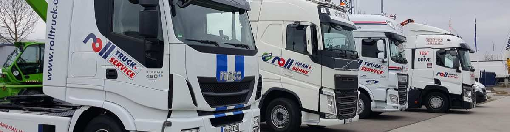
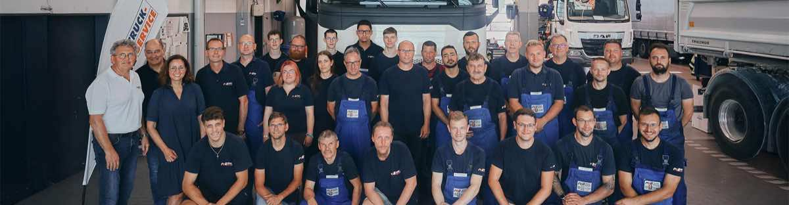
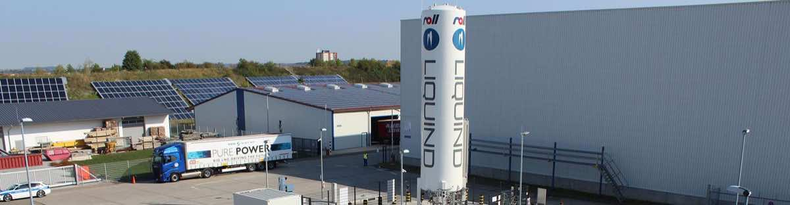

Duo · echter Fall Roll Truckservice · Bewertungszahl ohne Note




Nutzfahrzeug-Werkstatt in Crailsheim
Zweimal in Folge Werkstatt des Jahres.
Die Auszeichnung vergibt eine Fachjury an Betriebe, die bei Erreichbarkeit, Durchlaufzeit und Diagnosequalität vorne liegen. Dazu kommen vier Vertragspartner und eine Werkstattkette, die seit 150 Jahren in Familienhand ist.

Zwölf Hebebühnen, eigener Abschleppdienst, Notdienst rund um die Uhr.
Duo · mit Note 4,7 · halber Stern wird aus der Note gerechnet
Auszeichnungen
Geprüft, bewertet, ausgezeichnet.
Drei Siegel und vier Marken. Mehr braucht es nicht, um zu zeigen, dass hier nicht improvisiert wird.

Siebzehn Leute, die alle schon lange da sind.
Duo · Grenzfall: kein Bild, nur drei Kacheln, sehr lange Überschrift
Ausgezeichnet als Werkstatt des Jahres 2024 und 2025 durch die Fachjury der Nutzfahrzeug-Branche und damit zweimal in Folge an der Spitze
Ohne Bild läuft die Karte auf die ganze Breite.
Duo · Grenzfall: eine einzige Kachel, kein Text, keine Bewertung
Werkstatt des Jahres.

Streu · sieben Logos · erste Wahl
Vertragspartner
Alles aus einer Hand.
Wir sind Vertragswerkstatt für Volvo Trucks und Iveco, DAF Vertragspartner, PEMA Stützpunkt und Servicepartner von Schmitz Cargobull, Krone und Vergölst. Ein Ansprechpartner für Zugmaschine, Auflieger und Reifen.
Dazu Prüfstützpunkt für die Hauptuntersuchung nach § 29 StVZO.
Streu · Grenzfall: zwei Logos
Partner
Zwei Marken, ein Stützpunkt.
Bei wenigen Logos bleibt das Feld bewusst luftig.
Streu · Grenzfall: 26 Logos · es wird nichts gekürzt, das Feld wächst
Vertragspartner
Sechsundzwanzig Marken.
Mehr als vierzehn Logos werden dicht. Dann zieht die Maske weiter auf, damit kein Logo im Rand verschwindet. Oberhalb davon ist die Logowand die bessere Wahl.
Streu · auf dunklem Grund
Vertragspartner
Dieselben Marken, dunkler Grund.
Die Kacheln bleiben hell, damit die Logos nicht ausgeblichen wirken.
Zum Vergleich: der alte Baustein siegel
Auszeichnungen
Werkstatt des Jahres 2024 und 2025.
Der bisherige Stand.